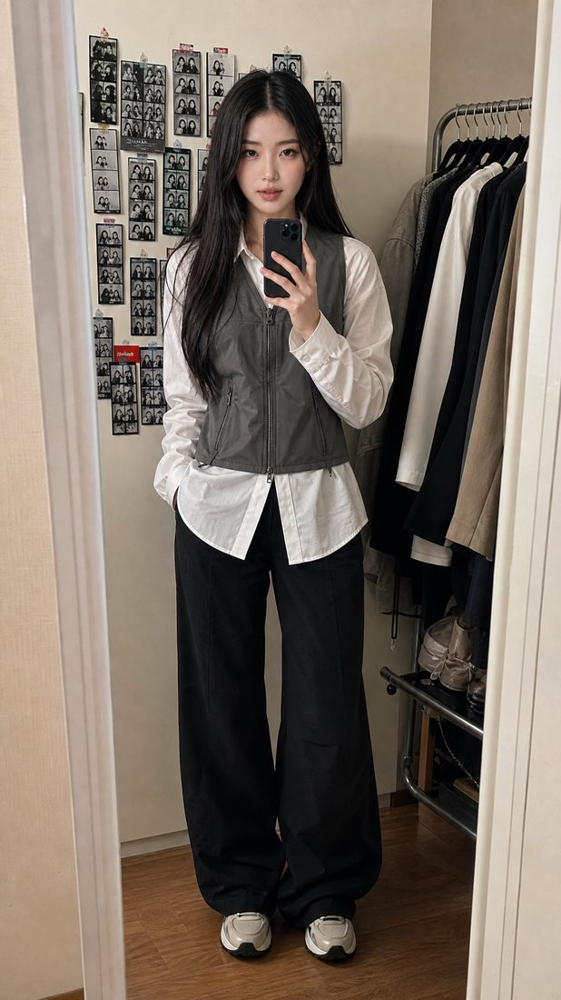
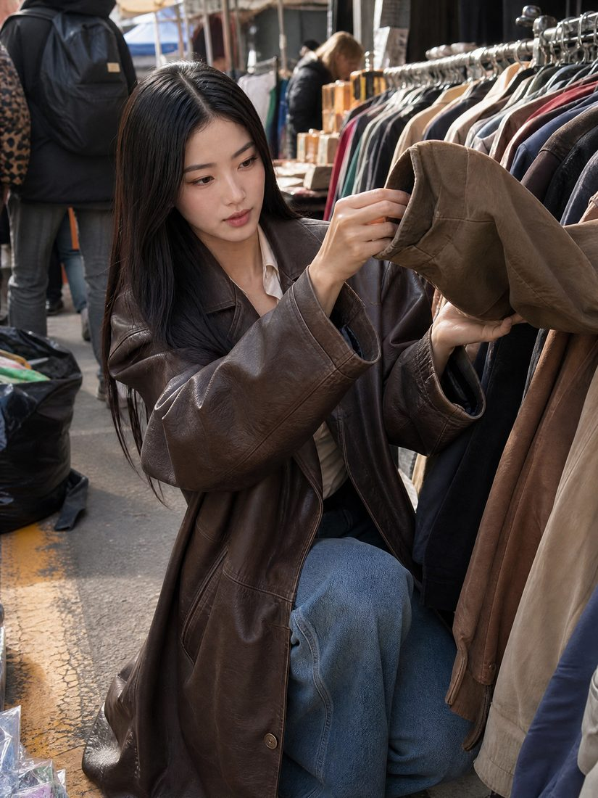
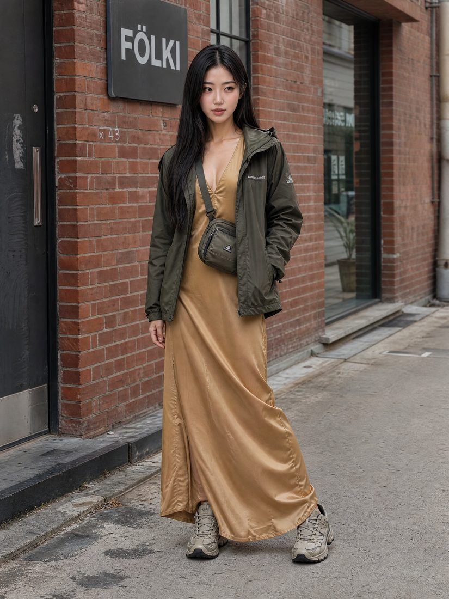

YerinSeo
Fashion, decoded. One outfit a day, and why it works.
Every piece she wears, tracked down and linked.

Recent looks
Updated daily

The shelf is being stocked
Each look gets broken down here into the pieces that make it, with a link to buy. First drop lands with the next set of looks.